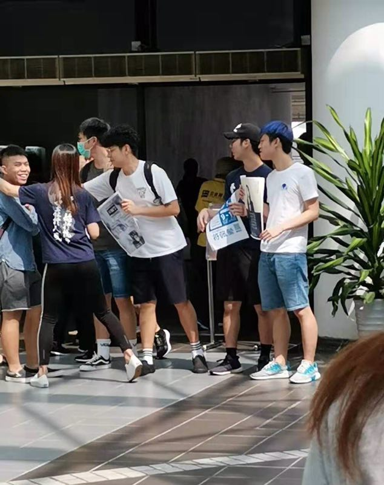
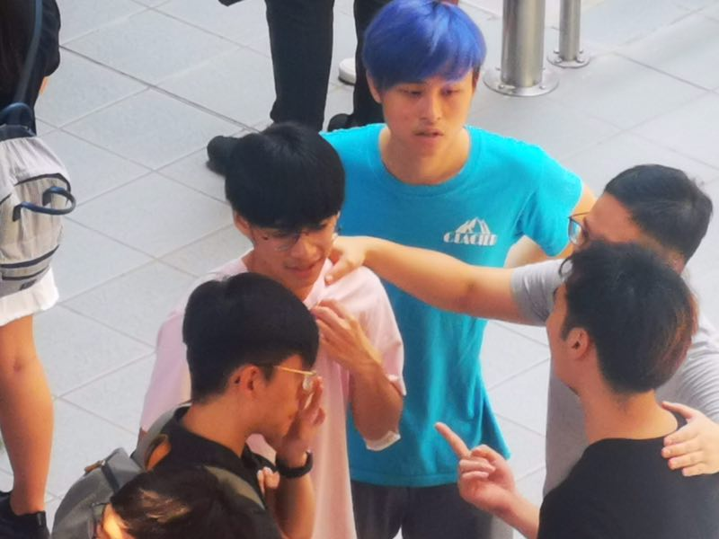

投訴信時間限制：11月5日前
Dear Dr. WEBB,
Candidates Ms. Fu Puiying, who is the Executive Committee Member of the HKUST’s Student Unions, did co-op with student leaders in dormitories (mainly from Hall 3) to stand near the voting point and grab students to vote for her. They did this on the last day of the election and unlawfully campaigned in the area between ARO and the Tang Shiu Kin Computational Laboratory.
In the video (i.e., Appendix 1), you can see the man with the “blue hair” was doing the campaign for Ms. Fu Puiying, who is the lady with a cloth in navy blue. Later on, you can see the photo (i.e., Appendix 2), which shows that Ms. Fu and the blue hair grab students near the prohibited zone and forced them to vote for Ms. Fu. Since the area between ARO and the Tang Shiu Kin Computational Laboratory is prohibited by taking photos and video, only the entrance photo is provided.
The blue hair was identified as the Execution Committee member of Hall 3 by the video (i.e., Appendix 3) and the photo (i.e., Appendix 4) on the day of blocking the LG1 restaurant.
Best Regards,
Appendix 1
Appendix 2
Appendix 3
Appendix 4
Dear Dr. WEBB,
Candidates Ms. Fu Puiying, who is the Executive Committee Member of the HKUST’s Student Unions, did co-op with student leaders in dormitories (mainly from Hall 3) to stand near the voting point and grab students to vote for her. They did this on the last day of the election and unlawfully campaigned in the area between ARO and the Tang Shiu Kin Computational Laboratory.
Best Regards,
此網頁有底綫，HKUSTSU無